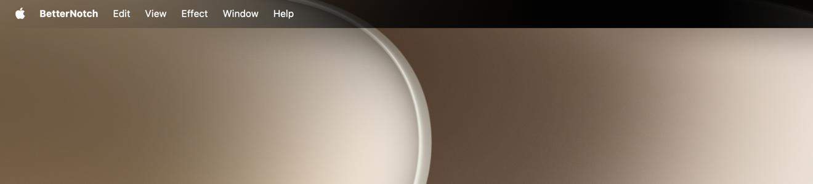
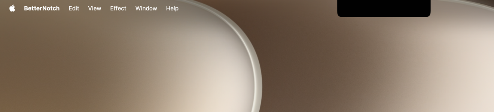
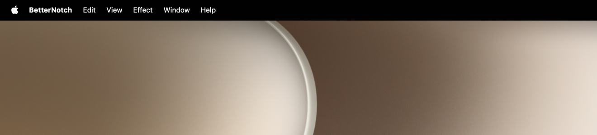

Let the physical notch disappear into the menu bar.
Gradient is the signature effect. Liquid Glass and Solid Black offer two distinct alternatives, with independent control for every display.

One menu bar. Four ways to see it.
Choose a style, then tap the notch above to move through the reel.
Gradient
The physical notch dissolves naturally into both sides of the menu bar.
The result comes first.
These are real menu bar captures. Original is the comparison; Gradient is the signature; Solid Black is the clean alternative.


A tiny studio for the top of your screen.
Choose a style for each display, tune it against three preview backdrops, and let BetterNotch run quietly in the background.
Per-display control
Choose a style independently for the built-in display and every external display.
Lightweight by design
Static desktop effects stay quiet and return after login.
Private by default
No account, analytics, tracking, or Screen Recording permission.